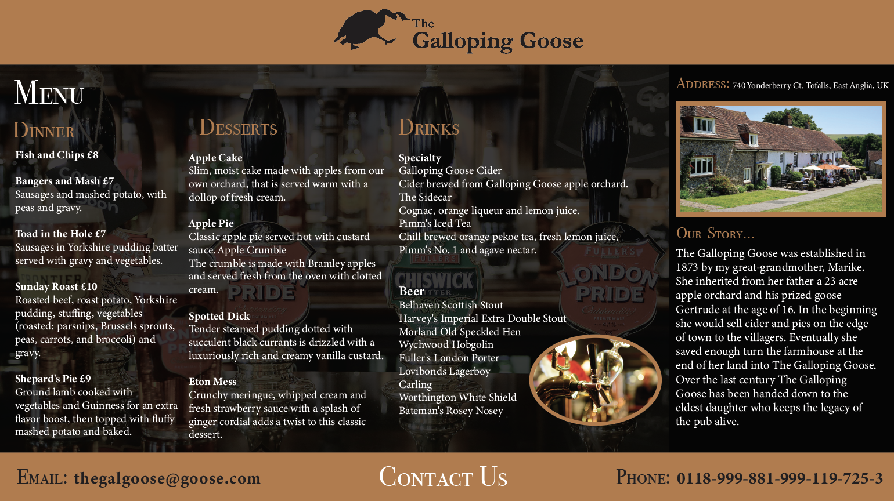
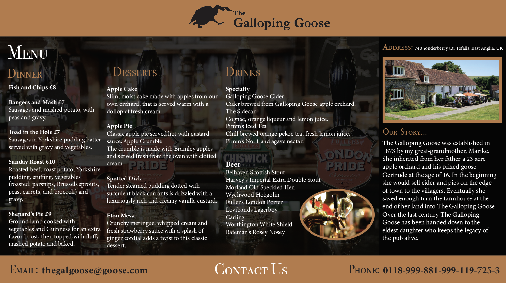

About Me
Hello, I’m Lydia Schultz! I am attending the University of Wisconsin, Eau Claire and graduating this spring for Graphic Communications. My interests include art, staying active, social events, going to coffee shops and watching sports. I am from Onalaska, WI and attended all schooling prior there. I have three brothers and two dogs, In which all live in La Crosse, WI. I have spent so much time trying to figure out what I want to do in the future, and I couldn’t be happier with the major I have chosen. Throughout high school, I have won three years of consecutive Spanish art competitions, my art has been in the newspaper, and I earned college credit for my AP art submission. Graphic design and art are my passions along with being social and communicating. I know that this is exactly what I was meant to do and I’m very excited to see where my creativity and this major take me!
Work History
- Art Commissions- Ever since I was young, I've been doing art commission work for people/businesses. Anything from paintings for nurseries, bars, business lobbies, painting on shoes, logos for small companies, wedding signs, flyers for businesses, etc.
- M.Y. Life Health Center- I worked at this job for three years. I worked at the front desk and communicated with guests. This included emails and phone calls as well as scheduling appointments. I did some graphic design work at this job and was InCharge of art related projects like writing on the boards and making flyers.
- Franchesca's- This was a boutique I worked for in Eau Claire for a year. I mainly worked with customers and retail. Answering the phone and checking people out at the register. I was also a large part of their social media marketing and modeled for their business.
- Sleep Inn and Suits Conference Center- This is my current job; I have worked here for a year. I do everything from helping with events, to working at the front desk, answering phone calls, emails, cleaning and booking appointments.
Gallery

 
